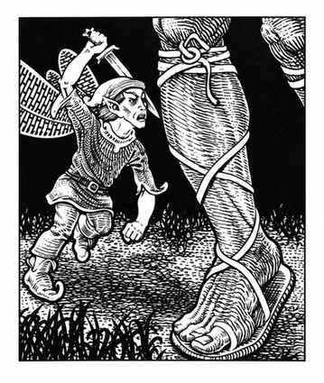

皮克精 · Pixie
 |
|
皮克精只生活在最理想的林地中，天生隐形，即使生物经过隐秘家园附近也几乎不会被发现。它们通常携带细剑和类似精灵妖精的精致弓；细剑视为匕首，箭矢均获得 +4 命中。战争箭造成 2–5 点伤害；睡眠箭命中后若魔法豁免失败，使目标昏睡 1–6 小时；失忆箭不造成肉体伤害，但会令目标完全失忆，只有牧师驱邪术或成功魔法豁免才能恢复。
皮克精可随意现形和变形，每天一次创造同时含听觉与视觉成分、无需专注且持续至被魔法解除的幻象；还能感知阵营。触碰目标时，若其魔法豁免失败会陷入永久困惑，除非施展移除诅咒。每天一次可用 8 级能力施展解除魔法、舞光术、心灵感应；十分之一的皮克精还能施展奥托不可抗拒之舞。由于通常隐形，敌人若无法察觉隐形目标，攻击骰 −4；皮克精可在隐形状态攻击。它们十分顽皮，常骚扰或戏弄生物；说自己的语言、精灵妖精语和通用语。